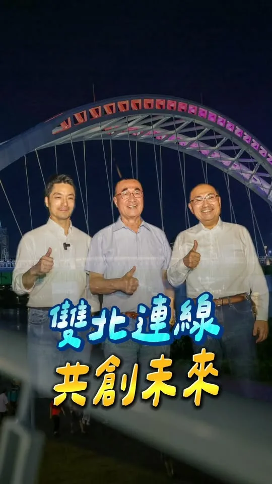
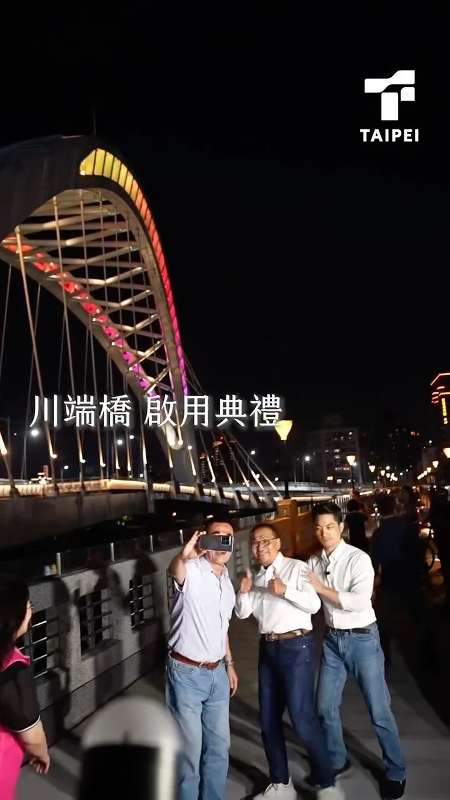
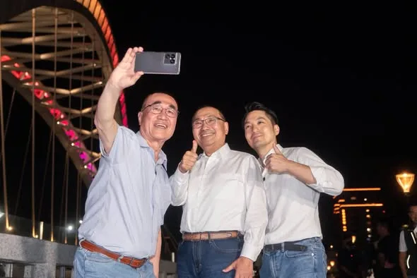
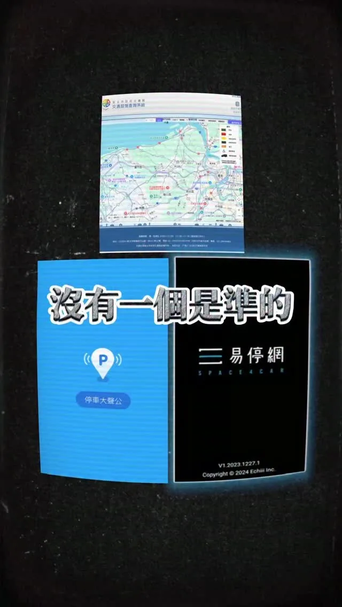
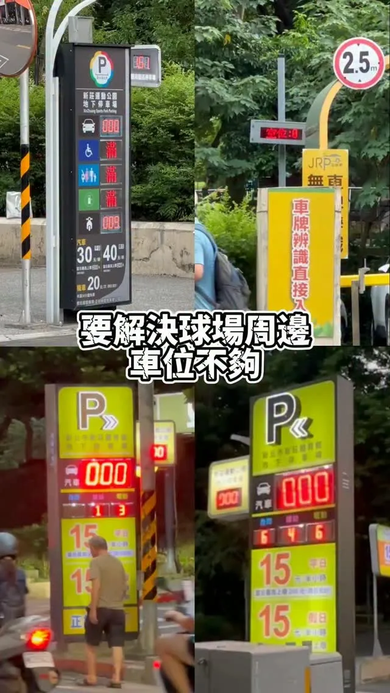

李四川Hammer Lee李四川Hammer-Lee-100051818071280
中秋團圓，佳節愉快。 有一群人，在大家團圓的時候，在崗位上守著大家，一個「圓」字少了一角。 也有很多人還在團圓路上，無法準時抵達。 我提「30 分鐘核心生活圈」，講的就是這件事。 捷運、輕軌，雙北一起規劃，把跨市這段路接順。 交通圓滿了，大家就能早一點下班、早一點回家吃飯。 回家路完整了，就不用等中秋。 祝大家中秋愉快。月餅跟家人分著吃、柚子不要忘，烤肉也要注意安全喔。
Posts
中秋團圓，佳節愉快。 有一群人，在大家團圓的時候，在崗位上守著大家，一個「圓」字少了一角。 也有很多人還在團圓路上，無法準時抵達。 我提「30 分鐘核心生活圈」，講的就是這件事。 捷運、輕軌，雙北一起規劃，把跨市這段路接順。 交通圓滿了，大家就能早一點下班、早一點回家吃飯。 回家路完整了，就不用等中秋。 祝大家中秋愉快。月餅跟家人分著吃、柚子不要忘，烤肉也要注意安全喔。

倒數65天繼續衝！前進 #蘆洲黃昏市場 真的很高興每次來到蘆洲，都會受到大家滿滿的支持與鼓勵！謝謝今天黃昏市場熱情的大家，送我粽子、菜頭，要祝我 #包中好彩頭！ 蘆洲正在快速發展中，未來我們要加速推動 #蘆南蘆北重劃區、#蘆洲醫院，也要緊盯 #捷運環狀線北環段 工程進度，讓蘆洲市民生活便捷、更舒適！ 今天也特別感謝 民進黨性別平等事務部 Gender Equality DPP #烏貓戰隊 許多姊姊妹妹站出來，和新北隊一起掃街！我會繼續匯聚各方力量，帶領新北迎向新時代！


@zenolai:前鎮漁港需要務實對策，不需要「先唱衰、再收割」！ 前鎮漁港是世界級的遠洋漁港，漁獲佔全台九成，前鎮漁港的發展與漁民權益，是我長期關心推動，五大建設81億爭取到位，許多細項也多次召開協調會處理，攤商與船員關切的事項，中央、地方早處理拍板定案。 9月17日，我陪同行政院秘書長@changtunhan 、農業部長陳駿季實地視察，並與陳其邁市長共同討論，漁業署確定公布「兩年試營運計畫」： ✅ 運銷中心攤商兩年免費進駐，依衛生標準與使用需求調整動線、降溫及攤位設備。 ✅ 船員住宿費再爭取降至100元，餘額協調由船東負擔，外籍漁工等同免費入住。 ✅ 改善船員大樓供水、異味、隔音，持續爭取增加接駁公車班次，回應實際需求。 今年度預算藍白主提凍結「漁業發展」預算1000萬元、凍結「漁業管理」預算2000萬元，民眾黨團也凍結7581萬的漁業相關預算。相關言行漁民及高雄市民都看在眼裡。

🌕中秋節前夕相聚，攜手做高雄堅強後盾 中秋佳節將屆，在這團圓、感恩的時刻，與市民朋友相聚，深深感受到高雄這座城市的溫暖和凝聚力，大家在各自的崗位上，為高雄的進步默默付出。 「由服務驅動、以價值觀團結」，是國際獅子會的核心精神。感謝300E-5區五福獅子會吳信霈會長相邀，獅友們長期扎根服務，是社會安定的重要力量。 而說到撐起高雄發展，必定有我廣大勞工兄弟姐妹。 在高雄市總工會秋節餐敘上，我向林明章理事長以及在座所有兄弟姐妹表達敬意。勞工是高雄經濟轉型的基石，我會持續爭取提升勞工權益，讓大家有更安全、更有保障的就業環境。 信仰，是支持我們大步向前的力量。 來到前鎮慈德宮參加金府千歲聖誕平安宴，感謝林金藝主委三十多年來的用心護持。前鎮這幾年的蛻變有目共睹，從81億元的前鎮漁港大改造，到亞灣區智慧公宅、黃線捷運的推動。我會接棒延續這些重大建設，讓前鎮的風華再次展現。 來到小港大坪頂無極主公殿參加平安宴，感謝梁敬德主委的用心，一同向廣澤尊王祈求國泰民安。小港是高雄的南大門，我會全力督促捷運小港林園線、國道七號貨櫃專用道如期完工，改善沿海路的交通安全，給小港居民一個更安全、更進步的生活環境。 從民間社團、勞工體系到基層宮廟，每一股力量都是推動高雄向前的關鍵，我會帶著這份感恩的心，把大家的期盼化為具體的施政成績，我們一起打拚，讓高雄成為更宜居、更繁榮的偉大城市！ 敬祝中秋佳節愉快、闔家平安！ 高雄小金剛許智傑 林岱樺 黃彥毓 前鎮小港 我願意 黃文益 高雄市議員 市議員李順進 尹立 左營楠梓市議員參選人 吳昱鋒-科技先鋒 李雅慧 高雄市議員 服務團隊 鄭光峰 高雄市議員 服務團隊 陳致中 Chih-Chung Chen 服務團隊

桃園是國門之都，有山有海，有鄉村也有都會，我們是全國工業產值第一的城市，產業鏈完整多元。這裡有引領世界潮流的AI、科技、電腦產業，也有傳統的汽車、機械、食品產業。百工百業在桃園，都有蓬勃發展的機會。 感謝民進黨主席賴清德總統，今天移師桃園舉辦行動中常會，我要向大家報告，我的家鄉桃園擁有獨一無二的優勢，更匯聚了大家對未來的無限期待。升格直轄市以來，我們的人口增加超過30萬。 然而，隨著人口迅速成長，建設的速度，卻明顯跟不上城市發展的腳步。 這段時間，我走遍桃園各區，聽見市民對於改變現狀的渴望，也看見這座城市的各種可能，以及被壓抑的巨大潛能。 我深知，現在的桃園正站在關鍵十字路口。市長作為市政發動機、民意接收站，需要「心在桃園、根在桃園」，唯有真正了解地方需求的人，才能帶領這座城市向前。 從產業升級、交通改善、醫療平權，到青年支持、藝文發展與運動環境，針對桃園此刻的各項不足，我已經準備好全方位的具體解方，要用扎實的政策，驅動這座城市大步向前！ 手上這一票，決定了接下來四年，桃園要向世界訴說什麼樣的故事。 我是在地子弟黃世杰，我受這片土地栽培，我的心在桃園，成家立業也在桃園，桃園是我的家鄉，是我實踐夢想的地方。 我有決心、更有行動力，我們要匯聚最大的力量，把過去三年多的停滯，化作未來三十年的爆發力。讓真正準備好的市長，帶領桃園迎向光榮、走向世界、奔向未來！ 11/28懇請支持黃世杰，支持桃園隊全壘打！ 一起找回令人動心的城市，讓心桃園動起來💖

@hsiehlungchieh:回覆網友陳情：仁德保安路一段（嘉南藥理大學附近）路燈不足、晚上很暗...龍介服務處已會勘要求增設路燈、修剪路樹


回覆網友陳情：仁德保安路一段（嘉南藥理大學附近）路燈不足、晚上很暗...龍介服務處已會勘要求增設路燈、修剪路樹

麥克風交給你們，搭舞台的事交給我！🎤 參加 #銀髮好聲音歌唱大賽 決賽，長輩們比唱功、比台風，連造型都不馬虎！今天我也和高雄隊好夥伴們帶來「快樂的出航」，讓大家放鬆心情，快樂開唱！ 我常在想，當市長就像搭舞台的人。舞台要穩、燈光要亮，讓台上的人盡情發光，也要把台下照顧好，讓大家安心坐下，快樂享受。城市也是如此，長輩想唱歌、交朋友，就要有方便參與的活動與社區空間，出門交通要便利，散步道路要平整，需要照護時，也要有人接得住。 這幾年，陳其邁 Chen Chi-Mai市長 佈建社區關懷與長照據點合計近1,200處，為高雄打下基礎。未來，我會接續努力，推動敬老卡每年提高至15,000點、擴大使用範圍，完善樂齡公園與無障礙環境，支持長輩自在出門、享受生活。 讓每一位長輩都能唱自己喜歡的歌、走自己想走的路、過自己想要的生活。舞台我來搭，掌聲和精彩，交給大家一起創造！ 林岱樺 邱俊憲 高雄市議員 陳慧文 高雄市議員 張漢忠 高雄市議員 蘇致榮 鳳山阿榮 黃捷 服務團隊

川端橋正式啟用的晚上， 侯友宜 市長說：全台灣做過台北市副市長、又做過新北市副市長的，也只有李四川一個。 謝謝侯市長這樣講，說實在有些不好意思。不過把雙北接起來，確實是我參選的初衷。台北做過，新北做過，兩邊的路、橋、局處，大概都跑過一輪。雙北哪裡接得上、哪裡卡住，我清楚。 蔣萬安 市長形容我是「第三座橋」，是基於我們的好默契，未來除了新店溪的兩岸，我會跟蔣市長一起，把雙北生活圈該接的都接起來。


昨晚，我和侯友宜 @hou.yuih 市長、李四川川伯 @hammer__lee 一起見證川端橋修復完工、正式啟用。 1937年啟用的川端橋，因連接當時臺北市的「川端町」而得名，是全臺現存歷史最悠久，也是唯一保有日本時代舊結構的大型跨縣市聯外橋梁，承載了雙北市民的共同記憶。 修復川端橋，是一條困難、卻更有意義的路。 雙北克服了工程技術挑戰，完整保留當年的雙柱式拱型橋墩與日本時期鋼梁，兼顧防洪、耐震與永續需求，轉型為行人與自行車專用的景觀橋梁，讓交通回歸以人為本。 走到橋的另一端，串起臺北城南的紀州庵文學森林與永和的楊三郎美術館。大家可以沿著新店溪，來一趟雙北藝文小旅行，感受河岸兩邊的歷史風華。 此外，配合周邊中正河濱公園的高空景觀橋、景觀塔及 #川端落霞廣場觀景平台 ，也預計在今年底完工，打造更優質的親水休憩空間。 感謝侯市長與新北市府團隊攜手合作；也要謝謝曾任臺北市、新北市副市長的川伯，一路以來親自督導川端橋修復工程。熟悉雙北、工程專業的他，也成為兩座城市之間的「第三條橋」，讓這次修復工程更具意義。 未來，臺北市和新北市會繼續攜手努力，打造好的建設、照顧市民朋友，讓雙北持續共榮、共治、共好。

@su.chiaohui:倒數65天繼續衝！前進蘆洲黃昏市場！ 真的很高興每次來到蘆洲，都會受到大家滿滿的支持與鼓勵！謝謝今天黃昏市場熱情的大家，送我粽子、菜頭，要祝我✨包中好彩頭✨ 蘆洲正在快速發展中，未來我們要加速推動蘆南蘆北重劃區、蘆洲醫院，也要緊盯捷運環狀線北環段工程進度，讓蘆洲市民生活便捷、更舒適！ 今天也特別感謝 @dpp_gender_equality 烏貓戰隊許多姊姊妹妹站出來，和新北隊一起掃街！我會繼續匯聚各方力量，帶領新北迎向新時代！

政黨立場可以不同，但我們同樣有讓台北更好的心願。 ⠀ 第二場「市長，你給我聽好了！」來到西門町，從無家者安置、交通標線，到「選前期待、選後失望」，每一題都很直接，也是市民對台北最真實的期待。 ⠀ 無家者問題，要從安置出發，串聯就業、成癮防治與心理健康支持；台北交通標線像「鬼畫符」，如果我當市長，就會重新盤點規劃，不能再只靠開罰處理問題。 ⠀ 現場提出建議的市民來自不同背景，也可能支持不同政黨，但希望台北更好的心願是一致的。市政不分黨派，只要是對市民有幫助的建議，我都會認真聽、積極做。 ⠀ 也有人問我，如何讓期待不變成失望？ ⠀ 我會守住投入公共領域的初衷，也用制度讓施政接受檢驗。 未來如果偏離對城市的願景、對國家的信念與自己的價值，請大家用力批評。 ⠀ 謝謝每一位願意站上台，把話說給我聽的市民。 ⠀ ＃市長你給我聽好了 ＃台北順起來 ＃你的市長沈伯洋

前鎮漁港需要務實對策，不需要「先唱衰、再收割」！ 前鎮漁港是世界級的遠洋漁港，漁獲佔全台九成，前鎮漁港的發展與漁民權益，是我長期關心推動，五大建設81億爭取到位，許多細項也多次召開協調會處理，攤商與船員關切的事項，中央、地方早處理拍板定案。 9月17日，我陪同行政院秘書長 張惇涵 Chang Tun-Han 、農業部長陳駿季實地視察，並與陳其邁市長共同討論，漁業署確定公布「兩年試營運計畫」： ✅ 運銷中心攤商兩年免費進駐，依衛生標準與使用需求調整動線、降溫及攤位設備。 ✅ 船員住宿費再爭取降至100元，餘額協調由船東負擔，外籍漁工等同免費入住。 ✅ 改善船員大樓供水、異味、隔音，持續爭取增加接駁公車班次，回應實際需求。 今年度預算藍白主提凍結「漁業發展」預算1000萬元、凍結「漁業管理」預算2000萬元，民眾黨團也凍結7581萬的漁業相關預算。相關言行漁民及高雄市民都看在眼裡。 「高雄城市轉型沒有退路」，前鎮漁港啟用超過50年，才好不容易爭取到81億元經費翻新整建，追求的是遠洋漁業升級的寶貴機會。高雄需要的是能夠解決問題的市長，讓城市持續升級的市長，我會持續盯緊改善進度，讓攤商安心做生意、船員安心休息，回應所有漁民的期待。

桃園是國門之都，有山有海，有鄉村也有都會，我們是全國工業產值第一的城市，產業鏈完整多元。這裡有引領世界潮流的AI、科技、電腦產業，也有傳統的汽車、機械、食品產業。百工百業在桃園，都有蓬勃發展的機會。 感謝民進黨主席賴清德總統 @william_chingte ，今天移師桃園舉辦行動中常會，我要向大家報告，我的家鄉桃園擁有獨一無二的優勢，更匯聚了大家對未來的無限期待。升格直轄市以來，我們的人口增加超過30萬。 然而，隨著人口迅速成長，建設的速度，卻明顯跟不上城市發展的腳步。 這段時間，我走遍桃園各區，聽見市民對於改變現狀的渴望，也看見這座城市的各種可能，以及被壓抑的巨大潛能。 我深知，現在的桃園正站在關鍵十字路口。市長作為市政發動機、民意接收站，需要「心在桃園、根在桃園」，唯有真正了解地方需求的人，才能帶領這座城市向前。 從產業升級、交通改善、醫療平權，到青年支持、藝文發展與運動環境，針對桃園此刻的各項不足，我已經準備好全方位的具體解方，要用扎實的政策，驅動這座城市大步向前！ 手上這一票，決定了接下來四年，桃園要向世界訴說什麼樣的故事。 我是在地子弟黃世杰，我受這片土地栽培，我的心在桃園，成家立業也在桃園，桃園是我的家鄉，是我實踐夢想的地方。 我有決心、更有行動力，我們要匯聚最大的力量，把過去三年多的停滯，化作未來三十年的爆發力。讓真正準備好的市長，帶領桃園迎向光榮、走向世界、奔向未來！ 11/28懇請支持黃世杰，支持桃園隊全壘打！ 一起找回令人動心的城市，讓心桃園動起來💖

這兩天，我走進 #大梨山地區，接連來到梨山天龍宮、松茂天松宮、環山環清宮、佳陽碧雲宮參拜，也和在地鄉親坐下來暢談未來的 #市政願景。從交通、農業，到醫療與長者照顧，大家關心的每一件事，都和山城的日常生活緊緊相連。 這些年，我不僅持續爭取 #中橫復建，未來也希望把AI帶進農業，讓病蟲害辨識、防災預警更即時；把遠距醫療、智慧衛生所和緊急送藥帶進山城；再串聯福壽山、武陵的觀光資源與原民文化，讓大梨山的好，被更多人看見！ 說明會上，有農民特別和我分享對 #農產行銷、#通路拓展 的期待，也有鄉親表達支持與鼓勵。這些話，啟臣都謹記在心！ 不僅要改善梨山交通建設，更要讓大梨山和整個臺中一起升級！讓住在山上的人，也能擁有更便利、更安心的生活。 #臺中升級 #幸福加給

回覆網友陳情：仁德保安路一段（嘉南藥理大學附近）路燈不足、晚上很暗...龍介服務處已會勘要求增設路燈、修剪路樹

昨天來到梓官大壽宮廟口開講，看到這麼多鄉親到場，也和方信淵、宋立彬、陸淑美三位議員及黃韻涵議員候選人一同討論梓官的未來。 梓官真的很美。許多人來到高雄，第一站常常就是到蚵仔寮吃海產。很多人說高雄最美的是西子灣，但在我眼裡，梓官的海線一樣有自己的魅力，只是這麼美的地方，不能只有一個蚵仔寮，觀光、交通、漁業，都還有很大的發展空間。 而最不能迴避的，就是治水。 上個月到典寶里勘災，看到淹水情況，也聽到鄉親說：「30年來都這樣。」箱涵、排水系統老舊等問題，地方早就知道，真正需要的是政府把資源用在最需要的地方。 高雄要進步，不能只有看得到科技產業，也要讓孩子願意留下來、讓薪水提高、讓環境更好，讓每一個地方都能分享到城市發展的成果。 所以我提出四個方向：薪水漲起來、人要留下來、環境好起來、高雄拚世界。 我希望十年、二十年後，大家回頭看2026年的選擇，會發現梓官真的變得更好，孩子留下來了，長輩生活得更有尊嚴，這片美麗的海線也被更多人看見。 這是我對高雄、也是對梓官最深的期待。 #高雄 #梓官

今天來到 #和平區環山部落，受到族人朋友熱情歡迎。部落耆老依照泰雅族傳統，親自為我披上戰袍，現場族人也唱起「當選歌」，看到大家這麼熱情，我也更感受到族人對未來的期待與託付。 臺中有超過4.3萬名原住民族朋友，但只有約一成居住在和平區。很多族人生活在豐原、潭子、北屯、太平等地，因此我認為，原民照顧不能只留在原鄉，更要走進大家生活的每一個地方。 對此，我提出五項原住民族政策： ✨升級職業培力，強化就業競爭力 ✨加碼原民微型保險，由市府全額負擔15至64歲族人保費 ✨打造行動長照車，把醫療檢測與照顧帶進部落 ✨鼓勵原鄉外設置原民據點，提供展演、交流及青年創業空間 ✨建構原民語言與祭儀智慧庫，透過科技延續文化傳承 現場也有族人關心醫療、長照、交通、青年發展與文化傳承。我會把這些聲音帶回市政規劃，讓資源真正走到需要的地方！ #臺中升級 #幸福加給 #原力覺醒 #臺中即原鄉

【本集介紹】 📌 習近平將赴美與川普碰面 📌 生不如死...少子化嚴重！龍介提出最強婚育宅 📌 龍介有方法！當選後一定查弊案 📌 網友問「烏樹林暫置場」有沒有弊案？有沒有民意代表介入？ 📌 台南市府經發局長陳凱凌為什麼會抓去關？ 📌 台南市府爆那麼多弊案...市長都不知道？ 📌 台南市近三年累計開出高達 145萬張交通罰單 支持龍介線上捐款：https://donate.newebpay.com/062268268/hsiehlungchieh115 龍介的 Tiktok 開放 Call in 👉 https://www.tiktok.com/@longuy1003/live 👉 Call in 步驟：請至 Tiktok 搜尋「謝龍介」並找到龍介的直播，直播畫面的下方申請「訪客連線」，龍介兄會隨機接通。

昨晚，我和 侯友宜市長、 李四川Hammer Lee一起見證川端橋修復完工、正式啟用。 1937年啟用的川端橋，因連接當時臺北市的「川端町」而得名，是全臺現存歷史最悠久，也是唯一保有日本時代舊結構的大型跨縣市聯外橋梁，承載了雙北市民的共同記憶。 修復川端橋，是一條困難、卻更有意義的路。 雙北克服了工程技術挑戰，完整保留當年的雙柱式拱型橋墩與日本時期鋼梁，兼顧防洪、耐震與永續需求，轉型為行人與自行車專用的景觀橋梁，讓交通回歸以人為本。 走到橋的另一端，串起臺北城南的紀州庵文學森林與永和的楊三郎美術館。大家可以沿著新店溪，來一趟雙北藝文小旅行，感受河岸兩邊的歷史風華。 此外，配合周邊中正河濱公園的高空景觀橋、景觀塔及 #川端落霞廣場觀景平台 ，也預計在今年底完工，打造更優質的親水休憩空間。 感謝侯市長與新北市府團隊攜手合作；也要謝謝曾任臺北市、新北市副市長的川伯，一路以來親自督導川端橋修復工程。熟悉雙北、工程專業的他，也成為兩座城市之間的「第三條橋」，讓這次修復工程更具意義。 未來，臺北市和新北市會繼續攜手努力，打造好的建設、照顧市民朋友，讓雙北持續共榮、共治、共好。

倒數65天繼續衝！前進 #蘆洲黃昏市場 真的很高興每次來到蘆洲，都會受到大家滿滿的支持與鼓勵！謝謝今天黃昏市場熱情的大家，送我粽子、菜頭，要祝我 #包中好彩頭！ 蘆洲正在快速發展中，未來我們要加速推動蘆南蘆北重劃區、蘆洲醫院，也要緊盯捷運環狀線北環段工程進度，讓蘆洲市民生活便捷、更舒適！ 今天也特別感謝 @dpp_gender_equality #烏貓戰隊 許多姊姊妹妹站出來，和新北隊一起掃街！我會繼續匯聚各方力量，帶領新北迎向新時代！
放假囉，交通大癱瘓，我猜很多人正塞在路上，我跟KP唱歌給你們聽，舒緩煩躁的心情😂 #連假愉快
明起就是中秋跟教師節連假，是不是已經迫不及待！很多人中秋節會烤肉，新北市9/25-9/28的10:00-22:00有開放6個指定河濱烤肉地點： 🥩三重 中山橋下原住民族主題園區 🥩新店 陽光橋右岸萊茵公園 🥩板橋 光復橋下賞鳥河濱公園 🥩永和 福和橋下福和運動公園 🥩八里 八里文化公園 🥩樹林 鹿角溪原住民主題部落公園(全年開放) 放煙火鞭炮請配合市府指定地點時間、22:00-06:00嚴禁施放。 平日開放： 🎇三峽河右岸土城媽祖田運動公園(媽祖田棒球場右側100公尺範圍內) 🎇大漢溪左岸柑園河濱公園(柑園大橋南側往上游靠近河岸側低灘處200公尺範圍內) 🎇鶯歌河濱公園(館前路1K＋500處園區範圍內) 中秋節9/25限定： 🎇二重疏洪道出口堰堤頂步道 🎇大漢溪右岸(鐵路橋下游側至至湳仔溝抽水站排水口範圍內) 🎇 大漢溪左岸西盛環保公園(新莊垃圾轉運站至19 號越堤道) 歡樂過節後記得收拾垃圾；放煙火鞭炮請遵守規定，以免打擾市民安寧。外出走走，可留意交通資訊，避開易塞車時段。祝大家有個美好的連假～ 城市新莊先 新莊陳世軒 請讓我繼續為新莊做事💪

「車位已經夠難找了，上網查哪有停車位還要被耍！」新北市政府宣傳「新北市路邊停車空位查詢系統、停車大聲公APP、易停網APP」供民眾查停車位，卻無法反映車格現況，本該便民的查詢工具，反而讓市民找出一肚子氣，我乾脆自己去測試，還真的沒有一次是準的！ 因車格仰賴人工收費造成落差，要解決就得建置智慧車格。新北要在2027年一月，將3萬多公有路邊汽車格跟停車場全智慧化，但新莊路邊汽車格只有2191格太少了，所以我總質詢時提出： 🚘 加速智慧車格的布建，以提高周轉率及避免車輛久佔、市民更方便找車位。 🚘 車站、商圈、球場、學校等人潮密集處優先設置，新莊的智慧車格還需要再多。 🚘 查詢網站及APP需優化提供正確即時資訊。 市長侯友宜承諾會改進。便民服務不能做做樣子淪為口號，我會監督市府進度，讓新莊市民不再為找車位繞路或空歡喜，享受真正智慧城市的便利！ 城市新莊先 新莊陳世軒 請讓我繼續為新莊做事💪

這兩天，我走進 #大梨山地區，接連來到梨山天龍宮、松茂天松宮、環山環清宮、佳陽碧雲宮參拜，也和在地鄉親坐下來暢談未來的 #市政願景。從交通、農業，到醫療與長者照顧，大家關心的每一件事，都和山城的日常生活緊緊相連。 這些年，我不僅持續爭取 #中橫復建，未來也希望把AI帶進農業，讓病蟲害辨識、防災預警更即時；把遠距醫療、智慧衛生所和緊急送藥帶進山城；再串聯福壽山、武陵的觀光資源與原民文化，讓大梨山的好，被更多人看見！ 說明會上，有農民特別和我分享對 #農產行銷、#通路拓展 的期待，也有鄉親表達支持與鼓勵。這些話，啟臣都謹記在心！ 不僅要改善梨山交通建設，更要讓大梨山和整個臺中一起升級！讓住在山上的人，也能擁有更便利、更安心的生活。 #臺中升級 #幸福加給

回覆網友陳情：仁德保安路一段（嘉南藥理大學附近）路燈不足、晚上很暗...龍介服務處已會勘要求增設路燈、修剪路樹


昨天來到 #梓官大壽宮 廟口開講，看到這麼多鄉親到場，也和方信淵-高雄市議員、宋立彬 高雄市議員、陸淑美三位議員及黃韻涵 議員候選人一同討論梓官的未來。 梓官真的很美。許多人來到高雄，第一站常常就是到蚵仔寮吃海產。很多人說高雄最美的是西子灣，但在我眼裡，梓官的海線一樣有自己的魅力，只是這麼美的地方，不能只有一個蚵仔寮，觀光、交通、漁業，都還有很大的發展空間。 而最不能迴避的，就是治水。 上個月到典寶里勘災，看到淹水情況，也聽到鄉親說：「30年來都這樣。」箱涵、排水系統老舊等問題，地方早就知道，真正需要的是政府把資源用在最需要的地方。 高雄要進步，不能只有看得到科技產業，也要讓孩子願意留下來、讓薪水提高、讓環境更好，讓每一個地方都能分享到城市發展的成果。 所以我提出四個方向：薪水漲起來、人要留下來、環境好起來、高雄拚世界。 我希望十年、二十年後，大家回頭看2026年的選擇，會發現梓官真的變得更好，孩子留下來了，長輩生活得更有尊嚴，這片美麗的海線也被更多人看見。 這是我對高雄、也是對梓官最深的期待。 #高雄 #梓官 #廟口開講

蔡其昌 海線等太久了！這次換何欣純拚建設

20260922 台南市近三年累計開出高達 145萬張交通罰單...生不如死..龍介提出最強婚育宅！網友問「烏樹林暫置場」有沒有弊案？有沒有民意代表介入？ @longmedia ｜龍介的直播

「你今天在新莊棒球場附近有找到車位嗎？」、「你在新莊棒球場周圍有被塞到嗎？」 新莊棒球場周邊停車問題及亂象長期困擾球迷及在地居民，但市府跟我說「車位充足而且還多出一千多格。」擺明睜眼說瞎話！所以我拍給大家看有球賽時球場周邊交通跟球迷、居民的心聲，大家抱怨沒車位、甚至為停車打架，狠狠打臉市府說法！ 我向市府提出，「中港國小可改建體育館並蓋地下停車場。」因中港國小周邊也是長年缺乏車位，加上球賽時更是一位難尋，如果中港國小蓋地下停車場，就能讓在地居民停車，新莊體育場周邊的車格則能釋放出給球迷們，減少停車亂象。 我從去年起不斷向市府提議，無奈市府推三阻四。或許就像影片裡的阿姨說的，叫市府自己來看，而非坐在辦公室裡看報告。而我，會繼續爭取到底！ 城市新莊先 新莊陳世軒 請讓我繼續為新莊做事💪